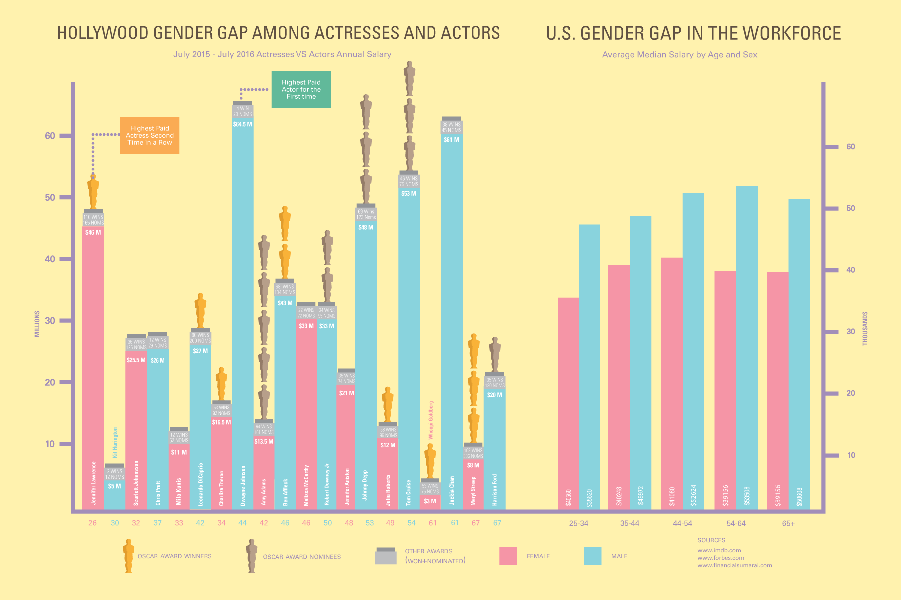

People don't usually like to talk about Gender Gaps in the US very much because we don't like to admit that we have a problem with our society or government. We chase the American dream, yet we are left in an environment where our resources and financial support are very scarce.
To create a poster using graphs to indicate the issue between gender gap among Hollywood Celebrites and U.S. Workforce all on the same chart.
This was a very difficult assignment to understand and comprehend data while implementing two similar issues onto one singlenchart. Since we don't have access to data resesrch, it was very difficult to find data on some topics and I had to constantly change it. I also had a hard time finding some of the celebrities income for the fiscal year.
I decided to create an ascending chart of male and female in different age groups. Through the chart you can see that female celebrites income declines as male celebebrities income rises while female workers income rises and male workers income declines. I guess age and beauty is very important in Hollywood.
In Hollywood, the actresses (Jennifer Lawrenece) gets paid more when they're younger until they reach roughly about age 42 while actors (Leonardo Dicaprio) earns more beginning at age 42 . In the workforce, women earn typically less than men when they're young and continues to go up while men's income slightly decrease as they age 65+. It's very fascinating to compare the two and see how gender gap between men and women is very similar regardless if it's Hollywood or in the workforce or not.
I never considered myself as a feminist nor have I ever gave it much thought to act upon it or do anything about it because I simply didn't know how much it affects me nor did I tried to care too much. I must have thought it was the norm and things were going to remain the same.
After doing my research on gender gap, I had a new perspective and it's different now. I'm also working with and hearing more women voicing their opinions about gender equality which made me realized that I need to be actively involved and support these cause. What we're experiencing isn't right.. it's just so wrong... Some men can understand these discrepancies, but they may not have the same experiences as women do. It doesn't mean that women can't change it. It will just take some time, a lot of time...